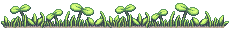

header art is by moyazou. support them on pixiv and twitter!
fonts used are Lato, Sacramento, and Roboto Slab. they are sourced from google fonts.
a lot of the graphics here are collected on xyz. it’s a fantastic and fabulous resource and i cannot recommend it enough.
the favicon is by Moya. they have some other cute touhou-inspired favicons on that page :)
lastly, this site wouldn’t be possible with the help of LayoutIt’s grid builder. this is not a paid ad or whatever, if anyone out there struggles with layouting they should give that tool a chance.
the little picture of my mascot is made using the picrew 곰은두말하지않스디 by II9__119 . their style is very cute so please check them out!
